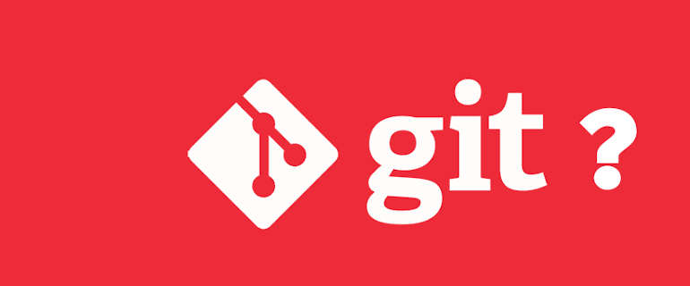

Git stating Area dosya kaydet - Git add & status
Projenizi ister yerel bir depoda olsun isterseniz uzak bir depodan klonlamış olsun tüm değişiklikleriniz yerel diskinizde gerçekleşecek ve commitleriniz ile oluşturacağınız tüm versiyonlar Git tarafından yerel diskinizdeki .git klasöründeki Git veri tabanında kayıt altına alınıp takip edilecektir....
- HTML
- CSS
- PHP
- JQUERY
- PHOTOSHOP
- JAVASCRIPT
- Web Dünyası
- Linux
- MİTHRİL FRAMEWORK
- Laravel
- Git
POPÜLER MAKALE
- HTML LİNK(Bağlantı)EKLEME - LİNK VERME
- HTML YAZI VE RESİM ORTALAMA
- HTML RESME LİNK VERME
- HTML FORM OLUŞTURMA
- HTML DİV ve SPAN NEDİR?
- HTML RESİM EKLEME
- CSS (BOYUT) GENİŞLİK VE YÜKSEKLİK (Width-Height)
- CSS YATAY MENÜ YAPIMI
- KALİTE KAYBETMEDEN RESİMLERİ BÜYÜTME
- HTML KAYAN RESİM VE Marguee KULLANIMI
Git Deposunu Boşalt
Git'te depo, VCS(versiyon control sistem) tarafından bir dizi dosya ve dizin için meta verileri depolamak için kullanılan bir veri yapısı gibidir....
Git Yapılandırma
Git'i çeşitli platformlarda ilk kullanım için nasıl kuracağınızı anlamanıza yardımcı olacak, böylece kısa sürede kod okuyabilir ve yazabilir duruma geleceksiniz....